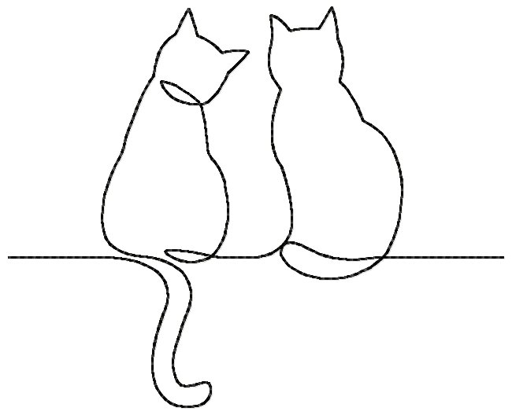

I have two cats. One is Rookie, An Abyssinian cat. and another is Tricolor cat
Age
Abyssinian cat is 8years old.
and i don't know Tricolor cat's age but,
I guess they are same.
Hobby
They like sleeping, eating, running,
and let me upset.(^ ^)
Food
Both like fish. My sister often but their
fish can,
They sencerely like that.
Character
Abbyssinian like people very much,
but
when it comes to strangers,
that is not true.
Tricolor cat is very very quiet cat.
but don't touch her.
her tooth is too sharp
